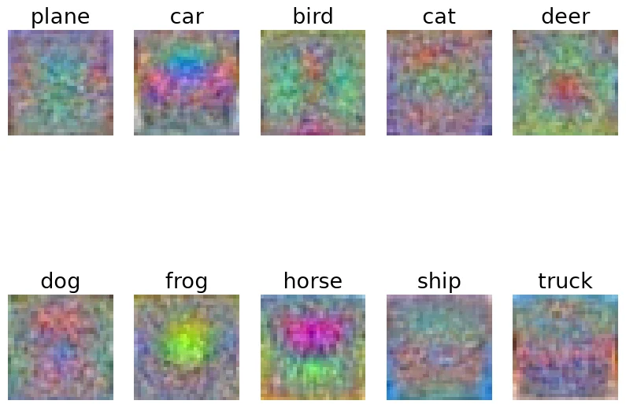
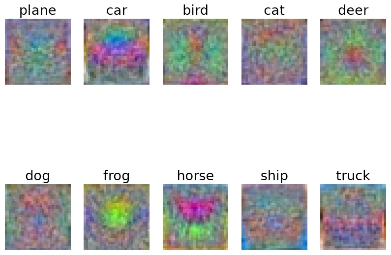

Assignment 2：Linear Classifier & Two-layer Neural Network
A2 include 3 questions:
Q1: Linear Classifiers. Walk you through implmenting SVM and Softmax classifier.
Q2: Two-layer Neural Network. Walk you through implementing a two-layer neural network-based classifier.
Q3: MNIST Challenge. Walk you through the challenge problem where you will manually set the weights of a Two-layer Neural Network classifier and evaluate on MNIST hand drawn digits. This interesting notebook encourages you to rely on your intuition to achieve the desired results.
Linear Classifier
线性分类器通过一层权重矩阵来给图片在各个类别打分：
其中\(W\)为需要训练的权重矩阵，形如(num_classes，D)，\(\mathbf{b}\) 为偏置。\(\mathbf{x}\)为输入的图片向量（各参数向量拼接成一个(D,)的大向量），\(y\) 为 \(\mathbf{x}\) 的实际类别。\(\mathbf{s}\)是得分向量，给出 \(\mathbf{x}\) 在每一类别的得分。可以通过把 \(\mathbf{b}\) 接到 \(W\) 的最后一列、并在 \(\mathbf{x}\) 的末尾补一个 1 （同时维度+ 1）来隐藏偏置。在本次线性分类器的训练中，我们采用了这种方法。
在这一章节，我们需要实现两种线性分类器，它们采用不同的损失函数来衡量预测得分与期望的差距。为了减少过拟合的影响，我们在损失函数后添加正则化项。
然后，通过求损失函数对权重矩阵的偏导来计算梯度 \(\nabla W\)。
这里\(R(W)\) 取 \(\Sigma_i \Sigma_j W_{i,j}^2\)，即矩阵 \(W\) 的 \(F\) 范数的平方。
最后，在每一轮的优化步骤中，我们采用简单的随机梯度下降(Stochastic Gradient Descent)(SGD)。
其中 \(\alpha\) 是学习率。
Hyperparameters
线性分类器涉及的主要的两个超参数是正则化系数 \(\lambda\) 和学习率 \(\alpha\) ，它们的选择对训练效果的影响较大。
SVM Classifier
- 损失函数：\(L_i = \Sigma_{j \neq y_i}\max(0,s_j - s_{y_i} +1)\)
- 梯度：\(\nabla_W L_i = \Sigma_{s_j - s_{y_i} + 1 > 0}^{j \neq y_i} (\nabla_W s_j - \nabla_W s_{y_i})\)
其中 \(\mathbf{d}W\text{[ j ]} = \nabla_W s_j = \mathbf{x}\)
👉 最终梯度还需除以训练图片数目，然后加上正则化项的梯度。
SVM Loss & Gradient
svm_loss_naive
使用循环的方法来计算损失函数和梯度
在每次的内循环中累加score涉及到的每个权重对总梯度的贡献，循环外将梯度矩阵除以常数num_train并加上正则化项的导数。
svm_loss_vectorized
计算 loss
计算工程中使用广播，并通过布朗矩阵mask判断需要累加的margin项。
| v0 | |
|---|---|
然而在实际计算中，会有一个问题。高亮行通过把正确类别的分数减 1 来抵消 margin 运算中对正确类别项额外加的 1 ，但在浮点运算中，由于精度问题，最终可能得到一个很小的接近 0 的数，它依旧会被mask判定为True。
对v0的 6-8 行进行修改，显式更改正确类别在mask中的布朗值，避免了浮点运算精度的影响。
计算梯度
一开始，我希望延续循环版本计算梯度的逻辑，只是把每次内循环对权重贡献的累加通过广播向量化。利用mask矩阵正确项的行列索引，得知需要计算梯度的score在scores矩阵的位置，然后把它们对相应权重的导数加到dW的相应位置上。另外，对于正确类别分数计算梯度，还需要得知损失函数里margin符合条件的次数。
| v0 | |
|---|---|
然而，高亮行存在一些问题。因为作为索引row和y会有重复值，按这种切片赋值时，解释器不会顺着我的想法，按重复下标累计，而会报错。
为了解决这个问题，我尝试使用scatter_add_进行累加，将高亮行改为如下形式：
| v1 | |
|---|---|
它的逻辑和v0语法错误的部分是相同的，只是用index矩阵绕了一圈，换成一种合法的实现。
这种实现通过了正确性测试，但性能方面不是很好，相比循环版本只有约 20X 加速。这是由于我构建了两个很大的索引矩阵index1/2，并且在scatter_add_中多次拷贝大矩阵X的整行，又向dW中做了多次累加，开销较大。
经 AI 提示，梯度的计算其实可以换一种角度思考。除了从score出发，找所有对它有贡献的权重然后计算梯度，我们还可以从 \(W_{ij}\) 出发，找到所有它贡献过的score，把它贡献的所有梯度累加到 \(\mathbf{d} W_{ij}\) 中。
这个逻辑可以用矩阵乘法表示，torch很擅长矩阵乘法，可以大大提高性能。
| v2 | |
|---|---|
构造一个(C,N)的系数矩阵\(\mathbf{A}\)，它与scores矩阵具有相同的结构。将它的margin>0的非正确项赋值为 1 ，正确类别项赋值为 -count。
\(\mathbf{d} W = \mathbf{X^T} \mathbf{A^T}\) 实际上就是在对每个权重一次性累加它对所有相关分数的梯度贡献。
v2相对svm_loss_naive的加速比为155.38X。
SVM Train
首先补全一些通用的训练和预测相关的函数，SVM和Softmax两种线性分类器公用。
- 划分
batch。因为一次性计算训练集所有的损失/梯度并求平均开销很大，我们在训练集中采样，每次仅用batch_size个样本来计算梯度。
- 训练分类器，记录循环次数和
loss的历史值。
- 使用最终的权重矩阵 \(W\)，计算输入图片的得分，并返回得分最高的类别。
- 检查超参数的选取，分别在训练集和验证集运行，比较准确率。
关于超参数的选取
对于learning_rates和regularization_strengths要如何取值能够最大化准确率，并没有一个确定的规律。我们需要先设置一些可能的超参数，并通过test_one_param_set进行测试，找出最好的超参数。
一种比较好的思路是，先尝试一些跨度较大的参数，确定最优参数的大概范围，然后逐步缩小参数间的跨度和范围，提高选取的精度。
最终结果
- 最佳参数：
- 在测试集上的准确率：38.6%
- 权重矩阵可视化：

Softmax Classifier
- 损失函数：\(L_i = - \log{\frac{e^{s_{y_i}}}{\Sigma_j e^{s_j}}} = - s_{y_i} + \log(\Sigma_j e^{s_j})\)
- 梯度：\(\nabla_W L_i = -\nabla_W s_{y_i} + \frac{\Sigma_j \nabla_W e^{s_j}}{\Sigma_j e^{s_j}}\)
分类&步求梯度：
- \(s_i\) 对梯度的贡献：\(\frac{e^{s_i} \times \nabla_W s_i}{\Sigma_j e^{s_j}}\)
- \(s_{y_i}\) 对梯度的贡献：\(-1 \times \nabla_W s_{y_i} +\frac{e^{s_{y_i}} \times \nabla_W s_{y_i}}{\Sigma_j e^{s_j}}\)
- \(\mathbf{d}W[j] = \nabla_{W} s_j = x\)
分别累加到 \(\mathbf{d} W\) 即可。
👉 最终梯度还需除以训练图片数目，然后加上正则化项的梯度。
Softmax Loss & Gradient
softmax_loss_naive
使用循环来计算Softmax的loss和梯度，按照上面的公式逐项求解即可。
但这里存在一个数据存储的问题，这几行高亮代码直接对原始的分数矩阵取了指数，遇到大正数可能溢出为 inf，大负数可能下溢为 0，求的概率可能变成 inf/inf 或 0/0，非法。
实际上遇到的主要是大正数的问题。
调整方向是，每个样本先减去它的最大类别分数，再求指数，既可以减小score的数值，还保持了Softmax概率不变（分子分母都可以提出 \(e_{{s_j}_{max}}\)）。
除此之外，还可以考虑将损失函数的计算从 \(L_i = - \log{\frac{e^{s_{y_i}}}{\Sigma_j e^{s_j}}}\) 改写为这个等价形式 \(L_i = - s_{y_i} + \log(\Sigma_j e^{s_j})\) ，这样就避免了实际概率的计算。
这两个修改都在代码块中用高亮标出了。
softmax_loss_vectorized
仿照svm_loss_vectorized，直接用矩阵乘法表示梯度计算。
num_train=X.shape[0]
num_classes=W.shape[1]
scores=torch.mm(W.t(),X.t())
scores -= torch.max(scores,dim=0).values
prob=scores.exp()
loss = loss + prob.sum(dim=0).log().sum().item() - scores[y,range(num_train)].sum().item()
loss /= num_train
loss += reg*torch.sum(W*W)
A=prob / (prob.sum(dim=0))
A[y,range(num_train)]-=1
dW = torch.mm(X.t(),A.t())
dW /= num_train
dW += 2*reg*W
与svm不同的是，softmax的 \(\mathbf{A}\) 矩阵的非正确类项赋值为 \(\frac{e^{s_i}}{\Sigma_j e^{s_j}}\)（忽略score减去最大值的调整），正确类项在此基础上还要多减一个 1（参考前面的softmax梯度计算公式）。后续 \(\mathbf{X^T} \mathbf{A^T}\) 将每个权重 \(W_{ij}\) 的所有梯度贡献累加到 \(\mathbf{d} W\)。
Softmax Train
复用之前的训练函数，先在训练集和验证集上选择超参数，再在测试集上进行测试。
最终结果
- 最佳参数：
- 在测试集上的准确率：40.01%
- 权重矩阵可视化：
